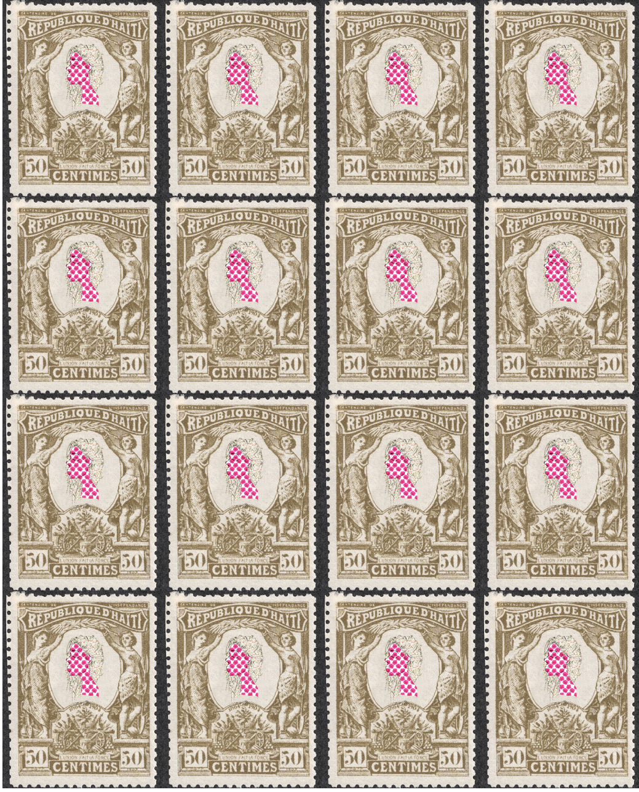
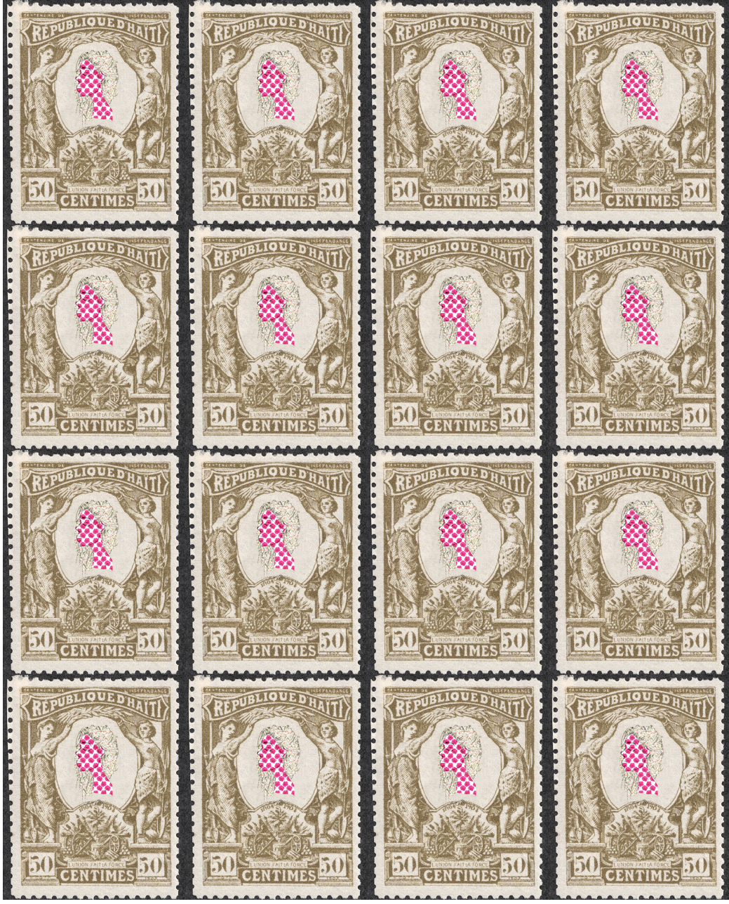

Bio
Caribbeanist. Artist. Feminist.
Samantha is a doctoral student at the University of Virgina who works in the fields of Caribbean studies and Digital humanities, where she thinks about Black archival imaginaries through poetry and poetics and digital art.
Projects
Publications
Journal of West Indian Literature“Caribbean Basins: Containing the Im/material in Kei Miller’s ‘Quashie’s Verse’ and Olive Senior’s ‘Gourd’” Journal of West Indian Literature, vol. 29, no. 2, 2021, pp. 13-28.
Websites
Secret Histories of Coomba: A (Re)collection of Heads Art and Cultures of the Slave SouthEtc.
Courses and Workshops
University of Virginia: “Writing about Digital Media: Decoding Digital Writing,” Fall 2021, Spring 2022
“Advanced Searching Workshop: Introduction to Twitter Data,” Introduction to DH, Professor Alison Booth, April 2022
Art
unde exca perferendis.
 
